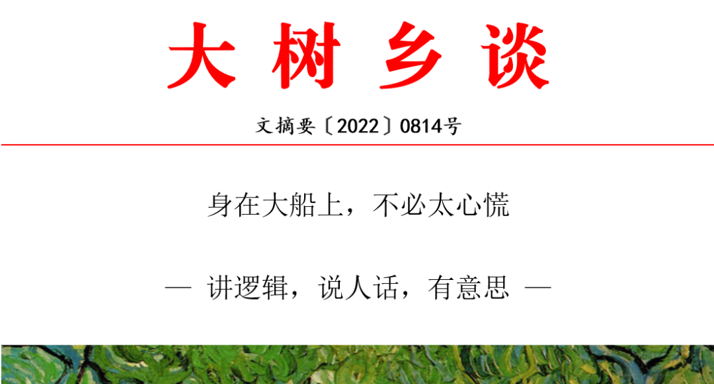

没必要“逼死”自己，我们终究是幸运的

- 1 -
最近写了很多负面情绪比较多的东西，从部分留言看出来有些紧张，比如有的大学在校生甚至高中生都在“焦虑”怎么扩大人际关系、怎么发展更好一点。但其实没必要这么紧张，更没必要给自己太大压力。大多数人本就是普通人，无论怎么努力在世俗标准中注定是普通的，哪怕考上公务员当上处长局长难道就不是普通人了？去了某大厂30来岁成了年薪两百万的P9之类难道不是普通人？现在已经不是几十年前了，在小镇父辈那一代，获得幸福其实是一件相对简单的事情，很多上一代人一辈子生活圈子就那么大，最多不过是几十公里的生活圈，也不知道有那么多超出想象的生活方式。
一辈子的愿望也很小，比如生活更好一些、住上一套几十平的房子就足够了。这种愿望放在现在，那就是没志气、躺平。现在随便问问，动不动就是毕业就要月薪上万、10年百万年薪，一定要在一线城市买房定居，自己的孩子也起码得考上985以上。志向比上一代大了许多，但并没有带来更大的动力和快乐，反而更加疲劳、负能量更大。上一代的生活也没现在想的这么快乐，比如现在老说的996，小镇父母是老师，他们当年696起步，都没有周末的概念，工作十几年之后才有了双休，但仍然经常加班，那时候钱也不多，照样买不起房，想买个好点的手机、摩托车就需要攒一两年所有的钱。
现在生活压力大、房价高，但是二线及以下城市买房定居的难度并不比上一代难多少。但上一代就是更容易快乐，关键是时代发展大势。上一代人工作开始就生活在一个持续上升的时代，90年代国企改革大规模下岗之后，紧接着就是加入WTO中国经济腾飞，从经济上中国从20分在几十年里爆发增长到60分甚至70分，发展太快了。比如工资收入，进入新世纪后，工资收入快速增长，很快就从几百涨到一千多、两千多、四千多，衣食住行方方面面的提升更是跨越性的。
同样是买车，父辈买第一辆车的时候，和小镇第一次买车时候的感觉是截然不同的。这些是当代人很难体会到的，当一个学生从不及格到了70分，再想考80分、90分，难度只会暴增，甚至存在不小心跌回不及格的可能。表现在现实中，就是很多人担心的阶层滑落，比如一次失业、一次重病、甚至是一次意外，等等。互联网的快速发展，又让每一个人轻易看到远比自己高几个层次的人的生活碎片，我们很清楚这几乎是一辈子甚至几辈子无法追赶的差距，看到那些人的灯红酒绿，又如何能安下心来为了涨1000块工资而格外努力呢？
所以，怨气、负能量都是正常的，有时候想要躺平也是理解的，但问题在于真的心甘情愿吗？
- 2 -
我们的教育体系变化很慢，基本上还是在上一代人乃至上上代人经验上形成的，比如60、70后，这两代人生活在中国的普遍上升期，当然相信努力就会有收获，好像也没做什么就过上了自己过去想都不敢想的生活，这是他们的经验，他们自然想要教给下一代人。所以教育中往往强调：好好读书、好好工作、好好努力，然后自然就过上好日子了。但当前的现实显然不是这样的，除了少数群体，学校、家庭教育很少甚至从来没有教过我们社会到底是什么样的、社会又是怎么运转的，大多数父母没有经验，学校的老师本质一直是在校生、长期与社会分割的他们其实也不懂。
于是无论父母还是老师只能以自己过往的经验作为指导，但新一代人走上社会后发现，根本不是这么回事。当然，努力和学习当然是对的，如果有人能够尽快适应社会的真实情况，完成自我调节，并且坚持下去，那确实会过得很好，但这个要求对多数人来说有些苛刻了。那怎么办呢？小镇觉得有两点可以作为普通人的一些参考：第一原则：什么阶段做什么事。尤其是高考以前的学生、以及大学生和刚工作几年的人，这个阶段努力的方向仍然是比较单纯的。（参见《人生前35年的个人发展方法论》《全球凛冬将至，我们个人该如何做好应对？》）比如高中生任务很简单，努力学习，考上尽可能好的大学、尽可能好的专业，至于什么人际关系、买房买车、职业规划等等不用去考虑，最多在报考志愿的时候再去思考。
对于大学生，还是要好好学习，最起码别挂科确保平稳毕业，在这个基础上重点做两件事：一是想清楚自己以后要干什么，科研学术还是就业，就业的话是体制内还是体制外，不同的路线有不同的细化方向；二是以自己的职业规划为导向，有意识地进行强化，比如目标就是去公司，那么最迟大三就要开始实习，尽可能利用最后的无压力、低成本、时间充沛阶段，增强对社会、职场、城市的认知。对于刚工作几年的人，最重要的就是尽快在工作上成为行家里手。第二原则：不要过于急躁，“想做的事”并不比“应该做的事”重要度低。第二点大家需要选择性的思考，因为人与人是不同的，做好第一点每个阶段最重要的事是第一位的，但是在已经可以达成自己的设定目标、行有余力的时候，其实没必要再继续逼自己，放松一些，做一些自己想做的事，并不会让自己一辈子就完了。
还是拿小镇举例，小镇学习还算凑合，工作以后，小镇也被年轻的同事说“太卷了”，一个人干几个人的工作早就习惯了。但是小镇自己心里很清楚，小镇并没有动用全力，如果从时间上看，扣去必要的休息，小镇起码每天还有三分之一的时间用来做自己喜欢但在很多人看来并不应该做的事。比如说每天照样刷抖音、看网络小说、玩游戏，花的时间也并不比每天分享写文的少；又比如也会在一些别人觉得这个年龄不应该再干的事情上花费心思。周末了，也并不是把时间用在所谓的努力学习、思考工作、结交人脉上，反而大量的时间用在琐碎的事情上，比如上面说到的抖音小说游戏，又或者单纯的打扫下卫生，逛下菜市场然后自个卤牛肉，去花市买点花草收拾下小花园，又或者单纯发发呆，兴致起了临时约几位朋友毫无目的的纯粹喝喝酒，亦或者随便看看有啥新出现的APP，等等。
这些事情看起来杂乱无章，毫无意义，但是更富有生活气息，让自己感觉到自己不是一个只知道努力的机器，而是一个活生生的人，让自己的心态更加稳定，同世界在更多维度上加强交互，拓展自己的思维。很多时候，在做杂事的不经意间，就会爆发出一些新的灵感，解决了自己可能一直没想清楚的复杂问题。
- 3 -
现代社会是一个极度复杂的机器，已经把每一个人都卷了进去，越是在大城市、越常上网的人，越容易被异化成一个被拧紧的螺丝，丝毫不敢放松，但是越不敢放松就越容易崩溃。很多人想拓展人脉、想要搞好人际关系，也存了在复杂社会下自保的心思。但是如果一个人过于紧张，往往会在人际交往中吃亏，反而不能得到自己希望通过与人交际获得的助力。原因就在于我们小时候受到的教育与现实是背离的，更没有点破本质，比如要跟人好好相处、要合群、要讲礼貌、要考虑别人的感受，等等。
但是在目前人类文明还没有达到更高层次，社会总资源有限的情况下，人与人之间的交际仍然习惯性的分层次，尤其在中国这种竞争特别激烈的大环境下，又或者在资源极度不足的社会相对低层。一般来说，我们每个人第一次见到另一个人的时候，潜意识总会进行比较，比较的核心就是“我”和“他”谁更高一点，这种比较是模糊的，每个人都有不同的标尺，包括客观的社会成就、外貌谈吐、智慧认知等等，对外表现的个人心态和接人待物的态度一定是关键影响之一。小镇之前曾经提到过，小镇刚到北京工作，领导就很不客气的指出小镇在接人待物上的问题：对别人太客气了，总是习惯性的“点头哈腰”，说话也过于谦逊，要求把腰杆挺直、正视对方、说话语速降下来等等，总之做到不卑不亢，不管对方是厅级还是更高，尊敬和卑微是两码事。
这个调整小镇用了几年时间，但收获很多。比如有一个体会：个人客观实力与自身在人群中的位置并没有必然联系。更高的社会公认成就，确实可以提高个人在人际交往中的优势，更容易被认可，一个有更高成就的人平易近人只会被当作优点，但如果跌落了反而泼辣点更好。但是这也要看人，有时候还是不免会被人轻视，会有人把“客气讲礼貌”当成有求于他，反而不利于人际关系的维护。学会尊重自己是我们需要首先学会的，在保持必要的社交活动和人际尊重的基础上，不必过于委屈自己，学会拒绝、学会不去讨好别人，别把没能满足别人的需求当成很恐怖的事情。小镇总说做好自己的事情，是社交的第一步。
但不要绝对化理解，因为人本就是社会化的生物，找到自己喜欢的与人相处的方式，开拓一些没有利益关联的社会关系，这也有利于尊重自己。
- 4 -
今天说得比较散，主要是回应最近相对提及比较多的情绪和问题。我们当代确实有很多难题，但小镇仍然觉得我们这一代以及未来的几代人是幸运的。因为我们生在中国，成长在新世纪，仅仅这一点就已经足够幸运了。未来的人类世界，大国相争仍然是主旋律，这几乎注定了，未来的人类世界是分层的，向上的大国和一般的国家截然不同，在向上的大国里生活的国民，几乎不需要比周围人努力太多，就能获得其他国家很难获得的一切。看看过去10年就知道了。2010年，全球GDP是66.6万亿美元，中美合计21.14万亿美元，占全球的31.7%；2021年，全球GDP是96.1万亿美元，中美合计40.73万亿美元，约占全球42.4%。
12年间，全球GDP增长29.5万亿美元，而中美合计增长19.59万亿美元，中美以外近200个国家和地区合计增长仅相当于中美两国的一半。如果再剔除欧盟、印度等少数还在增长的国家，可以说仅仅从GDP绝对值上，全球大多数国家都是负增长。中美占据了了过去12年全球增量的66.4%，而中国拿下了中美增量的59.4%， 这个趋势还在不断加速。正在到来的智能时代，生产力远高于过去任何时代，中国第一次站在了时代先行者位置，中国互联网从业者的高薪正是中国抢到了时代优先位置的明证。
在这样一个大环境里，其实可以相对放松一下。从大趋势看，00后到20后或许将成为中国最幸福的一代人，他们将再次经历一个人人普遍向上的新时代。而新一代过得更好，也必将让国家更好，所有的中国人都是获益者。
看到问题和困难的同时，也要看到我们的优势和解法。
其他文章推荐
■ 经济如此困难，中国会重新刺激房地产吗？
如果喜欢，还请点赞、“在看”和关注吧 欢迎分享，让更多人发现“大树乡谈”